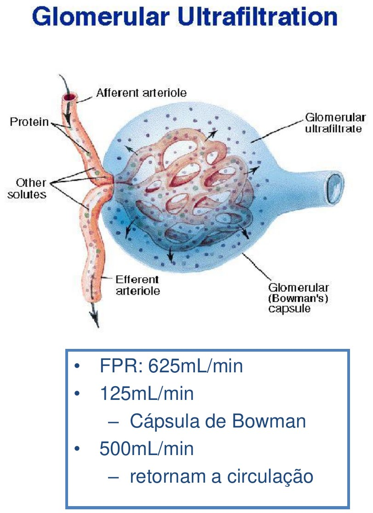
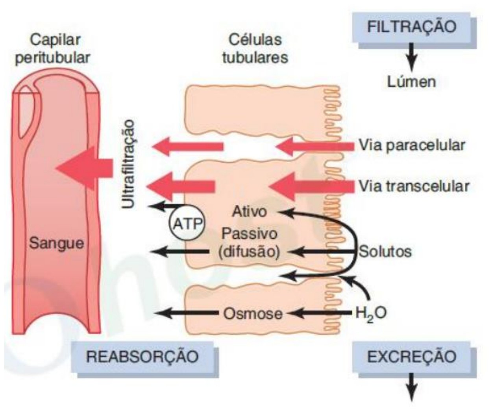
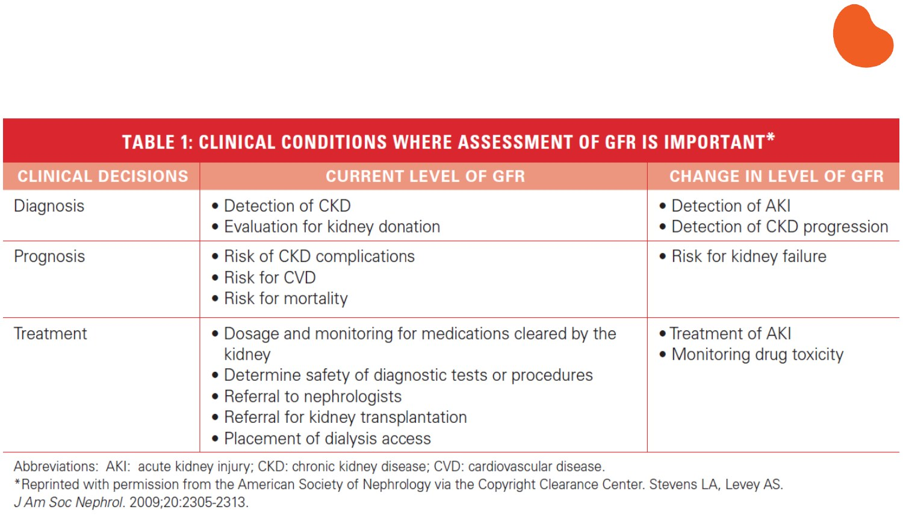

Avaliação da Função Renal
Três pacientes têm exatamente a mesma creatinina sérica: 1,2 mg/dL. Um é um homem negro de 22 anos; outro, um homem branco de 58 anos; o terceiro, uma mulher branca de 80 anos. Ao aplicar a mesma fórmula de estimativa, a taxa de filtração glomerular calculada varia de 98 mL/min/1,73m² (função normal) a 46 mL/min/1,73m² (doença renal crônica estágio 3) — o mesmo número de laboratório, três realidades clínicas distintas. Como um único exame de sangue pode significar coisas tão diferentes, e o que isso revela sobre os limites de qualquer método indireto de medir quanto os rins realmente filtram?
Fundamentos necessários
Os rins mantêm o ambiente extracelular constante por três vias simultâneas: excretam produtos finais do metabolismo (creatinina, ureia, ácido úrico), regulam o equilíbrio hidroeletrolítico e o equilíbrio ácido-básico. Paralelamente, funcionam como órgão endócrino — secretam renina (regulação hemodinâmica sistêmica e renal, via angiotensina II), eritropoetina (produção de hemácias) e participam da ativação da vitamina D em calcitriol (metabolismo de cálcio e fósforo) — e catabolizam hormônios circulantes. "Avaliar a função renal" significa, na prática, medir ou estimar quanto os rins ainda filtram, porque a filtração glomerular é o passo que condiciona todos os demais.

Cada néfron começa no glomérulo (Fig. 1) — um tufo de capilares envolto pela cápsula de Bowman, onde o sangue é ultrafiltrado sob pressão. O filtrado resultante percorre o túbulo proximal, a alça de Henle, o túbulo distal e o ducto coletor, sendo maciçamente reabsorvido e seletivamente modificado antes de se tornar urina definitiva. É esse processo de filtração na cápsula de Bowman — não a reabsorção tubular subsequente — que a expressão "função renal", no sentido estrito usado neste compêndio, designa.
Clearance renal: o conceito central
Clearance (depuração) de uma substância é o volume de plasma do qual essa substância é completamente removida pelos rins por unidade de tempo, geralmente expresso em mL/min. Se o clearance de ureia é 65 mL/min, isso significa que os rins removem toda a ureia contida em 65 mL de plasma a cada minuto — não que 65 mL de plasma sejam filtrados por inteiro (a maior parte da ureia filtrada é, na verdade, reabsorvida; o número descreve um volume equivalente, não um volume real).
O clearance de uma substância só reflete diretamente a taxa de filtração glomerular (TFG) se essa substância for (1) livremente filtrada pelos glomérulos, (2) não reabsorvida pelos túbulos, (3) não secretada pelos túbulos e (4) não sintetizada nem metabolizada ao longo do néfron. Qualquer desvio de um desses quatro critérios faz o clearance medido divergir da TFG real — para mais (se houver secreção tubular líquida) ou para menos (se houver reabsorção líquida).
Como substância exógena, a inulina exige infusão sanguínea contínua para manter concentração plasmática estável, cateterização vesical para coleta de urina, amostras seriadas de sangue e uma metodologia de dosagem laboriosa. O procedimento é preciso, mas inviável em rotina — por isso fica restrito a estudos científicos e à validação de métodos mais práticos, nunca à prática clínica do dia a dia.

Em um homem adulto saudável, o fluxo sanguíneo renal é de cerca de 1.200 mL/min; a fração de filtração (a proporção desse fluxo que efetivamente atravessa a barreira glomerular) é de aproximadamente 20% do débito cardíaco, resultando em uma taxa de filtração glomerular de 125 mL/min — o equivalente a cerca de 180 litros de filtrado por dia (Fig. 2). Dos 625 mL/min de plasma que chegam aos glomérulos, 125 mL/min são filtrados para a cápsula de Bowman; os 500 mL/min restantes seguem para os capilares peritubulares, de onde a maior parte da água filtrada retorna ao sangue por reabsorção. Uma substância hipotética P, livremente filtrada e sem reabsorção ou secreção tubular, teria clearance idêntico à TFG: 125 mL/min.
Creatinina como marcador endógeno
A creatininado grego kreas, "carne"Essência: literalmente "produto da carne" — reflete sua origem no metabolismo muscular, o que explica por que sua concentração varia com a massa muscular do indivíduo. é o produto final do metabolismo da creatina e da fosfocreatina musculares, com produção e liberação relativamente constantes ao longo do dia — dependendo pouco da atividade física aguda, da alimentação imediata ou de flutuações agudas do catabolismo proteico. Um homem adulto excreta tipicamente de 20 a 25 mg/kg/dia; uma mulher, de 15 a 20 mg/kg/dia (a diferença reflete massa muscular relativa média, não uma diferença fisiológica direta na função renal). O valor normal de creatinina sérica situa-se entre 0,6 e 1,0 mg/dL, mas esse intervalo é, por si só, pouco informativo sem considerar de que corpo veio aquele número — ponto que retorna ao longo de todo este compêndio.

Do ponto de vista dos quatro critérios de clearance: a creatinina é livremente filtrada (não se liga a proteínas plasmáticas) e não é reabsorvida pelos túbulos — mas uma pequena fração é ativamente secretada pelo túbulo proximal (Fig. 3). Isso faz o clearance de creatinina superestimar sistematicamente a TFG real, um viés que se acentua justamente quando a função renal piora (a secreção tubular passa a representar uma fração proporcionalmente maior da excreção total). Fármacos que inibem essa secreção tubular — trimetoprima, cimetidina, amilorida, triantereno, espironolactona — elevam a creatinina sérica sem qualquer queda real da TFG, um efeito farmacológico que pode ser confundido com piora da função renal se não for reconhecido.
| Fator | Efeito sobre a creatinina sérica |
|---|---|
| Envelhecimento | Redução (perda de massa muscular) |
| Sexo feminino | Redução (menor massa muscular média) |
| Etnia negra | Aumento (maior massa muscular média em estudos populacionais) |
| Etnia hispânica ou asiática | Redução |
| Hábito corporal muscular | Aumento |
| Amputação | Redução |
| Obesidade (tecido adiposo) | Sem alteração relevante |
| Desnutrição, inflamação, descondicionamento | Redução |
| Doenças neuromusculares | Redução |
| Dieta vegetariana | Redução |
| Ingestão de carne cozida (refeição recente) | Aumento transitório |
Tabela 1 — Fatores que alteram a geração de creatinina independentemente da função renal. Adaptado de Stevens & Levey, J Am Soc Nephrol 2009;20:2305-2313.
Essa lista é o motivo estrutural pelo qual nenhuma fórmula de estimativa de TFG usa a creatinina isolada: cada equação incorpora idade, sexo e (historicamente) etnia como proxies estatísticos da massa muscular — uma tentativa de separar, no número da creatinina sérica, o quanto reflete função renal e o quanto reflete geração muscular (ver Cockcroft-Gault, MDRD e CKD-EPI adiante).
Clearance de creatinina medido (urina de 24 horas)
Antes de qualquer fórmula estimada, o método direto de avaliar a função renal por creatinina é medir seu clearance real a partir de urina coletada por 24 horas, combinada com uma dosagem plasmática no mesmo período.
- Ccr — clearance de creatinina, mL/min. Referência normal: ~95–140 mL/min (homens), ~85–125 mL/min (mulheres), variando com idade e massa corporal.
- U — concentração de creatinina na urina de 24h, mg/dL.
- V — fluxo urinário, mL/min (volume total de urina de 24h dividido por 1.440 minutos).
- P — concentração plasmática de creatinina, mg/dL.
O resultado costuma ser ajustado para uma superfície corporal padrão de 1,73 m² (a área corporal média de um adulto de referência usada desde os primeiros estudos de fisiologia renal), permitindo comparar pacientes de tamanhos corporais diferentes. Na prática clínica, porém, a coleta de urina de 24 horas é sujeita a erro de coleta (períodos incompletos, perda de amostra) e é inconveniente o bastante para que a maior parte da avaliação de rotina hoje dependa de fórmulas estimadas a partir de uma única dosagem sérica — o objeto das três seções seguintes.
Fórmula de Cockcroft-Gault
- Ccr — clearance de creatinina estimado, mL/min. Multiplicar o resultado por 0,85 se sexo feminino.
- idade — em anos.
- peso — em kg (peso corporal real, sem correção de rotina para obesidade — ver limitações).
- Cr — creatinina sérica, mg/dL. Referência normal: 0,6–1,0 mg/dL.
A fórmula não é ajustada pela superfície corporal — diferença estrutural em relação ao clearance medido e às equações posteriores, que a torna menos comparável entre pacientes de tamanhos muito diferentes. Tende a superestimar a função renal em obesos (usa peso total, não peso magro) e não foi validada em extremos de idade, gestação ou massa muscular muito reduzida ou aumentada — situações em que a medida direta (ver Tabela 3, adiante) é preferível.
Fórmula do MDRD
- TFG — taxa de filtração glomerular estimada, mL/min/1,73m². Já normalizada pela superfície corporal — diferença estrutural em relação ao Cockcroft-Gault.
- Cr — creatinina sérica, mg/dL.
- idade — em anos.
- fator sexo — multiplicar por 0,742 se mulher; sem ajuste se homem.
- fator etnia — multiplicar por 1,210 se etnia negra, na versão original do estudo (ver kbox abaixo sobre por que esse coeficiente se tornou controverso).
Uma versão posterior, reexpressa após a padronização laboratorial IDMS (isotope dilution mass spectrometry) da dosagem de creatinina em 2006, substitui o coeficiente 186 por 175 — a equação mais efetivamente usada em laboratórios clínicos depois dessa data, embora a lógica e os demais expoentes permaneçam os mesmos.
O coeficiente 1,210 para pacientes de etnia negra foi derivado estatisticamente (a coorte do estudo MDRD tinha creatinina sérica mais alta, em média, entre participantes negros, para a mesma TFG medida) — uma tentativa de corrigir, na equação, a maior massa muscular média observada nessa subpopulação. Só que "etnia" é uma categoria social e autodeclarada, não uma medida direta de massa muscular, e o uso desse coeficiente sistematicamente eleva a TFG estimada de pacientes negros em relação a brancos com a mesma creatinina — o que, em sistemas de saúde onde a TFG estimada determina elegibilidade para transplante ou ajuste de dose de medicamentos, pode atrasar cuidado necessário. Essa tensão é exatamente o que motivou a revisão da equação CKD-EPI em 2021 (ver seção seguinte).
Fórmula CKD-EPI
A equação MDRD perde precisão em valores de TFG próximos do normal (acima de 60 mL/min/1,73m²), tendendo a subestimar a função renal de pessoas saudáveis — um problema relevante porque grande parte da população rastreada tem função renal normal ou próxima disso. Em 2009, o consórcio CKD-EPI (Chronic Kidney Disease Epidemiology Collaboration) publicou uma nova equação, derivada de uma amostra maior e mais diversa, com melhor desempenho nessa faixa — tornando-se a equação preferida pelas diretrizes internacionais a partir de então.
- TFG — taxa de filtração glomerular estimada, mL/min/1,73m².
- Cr — creatinina sérica, mg/dL.
- κ — 0,7 se mulher; 0,9 se homem (valor de referência aproximado da creatinina basal por sexo).
- α — −0,241 se mulher; −0,302 se homem.
- idade — em anos.
- min/max — a equação usa o menor valor entre (Cr/κ) e 1 elevado a α, e o maior valor entre (Cr/κ) e 1 elevado a −1,200 — mecanismo que faz a curva de estimativa mudar de inclinação conforme a creatinina está abaixo ou acima do valor de referência κ, sem precisar de duas fórmulas separadas.
Na prática clínica, essas três equações — Cockcroft-Gault, MDRD e CKD-EPI — raramente são calculadas manualmente: calculadoras validadas (como a da National Kidney Foundation e da Sociedade Brasileira de Nefrologia, ver Referências) fazem a conta a partir de creatinina, idade, sexo e peso, quando aplicável.
Limitações das estimativas baseadas em creatinina
A pergunta motivadora deste compêndio ilustra a limitação central de qualquer equação baseada em creatinina: o mesmo valor sérico pode corresponder a taxas de filtração glomerular muito diferentes, porque a creatinina mede geração muscular tanto quanto filtração renal.
| Homem negro, 22 anos | Homem branco, 58 anos | Mulher branca, 80 anos | |
|---|---|---|---|
| Creatinina sérica | 1,2 mg/dL | 1,2 mg/dL | 1,2 mg/dL |
| TFG estimada (equação MDRD) | 98 mL/min/1,73m² | 66 mL/min/1,73m² | 46 mL/min/1,73m² |
| Interpretação | Função normal (ou DRC estágio 1, se houver dano renal associado) | DRC estágio 2 (se houver dano renal associado) | DRC estágio 3 |
Tabela 2 — Adaptado de Stevens & Levey, J Am Soc Nephrol 2009;20:2305-2313. Mesma creatinina, três estimativas de TFG e três classificações clínicas potencialmente diferentes.
Além da variação individual em massa muscular, há situações em que qualquer equação estimada — mesmo a mais atual — é reconhecidamente pouco confiável, e a medida direta do clearance (ou de um marcador alternativo, ver Cistatina C) é preferível.
| Situação |
|---|
| Extremos de idade e de tamanho corporal |
| Desnutrição grave ou obesidade importante |
| Doença da musculatura esquelética |
| Paraplegia ou quadriplegia |
| Dieta vegetariana estrita |
| Função renal em mudança rápida (lesão renal aguda) |
| Gestação |
Tabela 3 — Indicações para medida direta de clearance quando a estimativa por creatinina sérica é reconhecidamente pouco confiável. Adaptado de Stevens & Levey, J Am Soc Nephrol 2009.
Cistatina C plasmática
A cistatina C é uma proteína de baixo peso molecular, não glicosilada, produzida em ritmo constante por praticamente todas as células nucleadas do corpo — ao contrário da creatinina, sua produção independe de massa muscular, sexo ou idade, o que a torna, em princípio, um marcador mais limpo de função renal isolada. Correlaciona-se melhor com a TFG medida do que a creatinina isolada e tende a detectar mais precocemente reduções da função renal, antes que a creatinina sérica se eleve de forma perceptível — uma vantagem relevante em estágios iniciais de doença renal, quando a chamada "reserva funcional renal" ainda mascara a queda de néfrons.
O valor de referência típico gira em torno de 0,53 a 0,95 mg/L, variando conforme o método de dosagem do laboratório (imunonefelometria ou imunoturbidimetria) — a cistatina C se eleva proporcionalmente à queda da velocidade de filtração glomerular, permitindo melhor controle de fatores de risco associados (hipertensão, diabetes, hiperuricemia). Seu valor também se altera com o uso de corticoides (em transplantados, glomerulonefrites, lúpus eritematoso sistêmico) e em disfunções tireoidianas — limitações que, na prática, tornam a combinação de creatinina e cistatina C (como na própria equação CKD-EPI 2021, que tem uma versão combinada) mais robusta do que qualquer um dos dois marcadores isolados.
Classificação KDIGO da doença renal crônica

Uma vez estimada a TFG, o passo seguinte é situá-la dentro de um sistema de estadiamento que também incorpore o grau de dano renal (medido pela albuminúria, ver seção seguinte) — porque TFG e albuminúria são preditores parcialmente independentes de risco de progressão, eventos cardiovasculares e mortalidade (Fig. 4). A diretriz KDIGO (Kidney Disease: Improving Global Outcomes) Diretriz combina as duas dimensões em uma matriz de prognóstico.
| Categoria de TFG (mL/min/1,73m²) | A1 — Albuminúria normal a levemente aumentada (<30 mg/g) | A2 — Moderadamente aumentada (30–300 mg/g) | A3 — Gravemente aumentada (>300 mg/g) |
|---|---|---|---|
| G1 — ≥90 (normal ou alta) | Risco baixo (sem DRC na ausência de outro marcador de dano) | Risco moderadamente aumentado | Risco alto |
| G2 — 60–89 (levemente reduzida) | Risco baixo (sem DRC na ausência de outro marcador de dano) | Risco moderadamente aumentado | Risco alto |
| G3a — 45–59 (leve a moderadamente reduzida) | Risco moderadamente aumentado | Risco alto | Risco muito alto |
| G3b — 30–44 (moderada a gravemente reduzida) | Risco alto | Risco muito alto | Risco muito alto |
| G4 — 15–29 (gravemente reduzida) | Risco muito alto | Risco muito alto | Risco muito alto |
| G5 — <15 (falência renal) | Risco muito alto | Risco muito alto | Risco muito alto |
Tabela 4 — Matriz de prognóstico KDIGO (categorias G × A). Adaptado de Levin et al., Kidney Int 2024;105:684-701 (PMID 38519239), a diretriz KDIGO vigente para avaliação e manejo da DRC.
A doença renal crônica (DRC) é definida por alterações da estrutura ou função renal presentes por mais de três meses, com implicações para a saúde — critério temporal que a distingue da lesão renal aguda (LRA), definida por queda rápida (horas a dias) da função renal, geralmente reversível se a causa for tratada a tempo. A avaliação da função renal descrita neste compêndio é o instrumento comum a ambas as situações, mas sua interpretação — crônica versus aguda — depende centralmente da trajetória temporal, não de um único valor isolado.
Avaliação complementar: exame de urina
A creatinina sérica e suas equações estimam a filtração — mas não dizem nada sobre lesão estrutural do néfron, que o exame de urina (urina tipo I, ou EAS) ajuda a detectar. Preferencialmente colhida na primeira micção do dia (mais concentrada, mais sensível a alterações), a análise cobre cor, densidade, pH, e a presença de elementos que normalmente estão ausentes ou em concentração mínima.
A densidade urinária (normal: 1005 a 1030) é uma medida indireta de concentração, mas como valor isolado tem pouco valor diagnóstico — precisa ser interpretada junto do volume urinário e do contexto clínico (hidratação, uso de diuréticos). O pH normal varia de 4,5 a 7,5. A presença de glicose na urina geralmente indica glicemia acima de 200 mg/dL — o limiar tubular de reabsorção de glicose (Tm, cerca de 160 mg/dL) sendo ultrapassado. Corpos cetônicos (acetoacetato e acetona) aparecem na cetoacidose diabética, na cetoacidose alcoólica e no jejum prolongado. Um teste positivo para hemoglobina ou mioglobina exige diferenciar hematúria (hemoglobina livre, por hemólise) de mioglobinúria (rabdomiólise) — a fita reagente não distingue as duas, exigindo correlação com sedimento urinário e contexto clínico.
Proteinúria e albuminúria
A proteinúria é, simultaneamente, marcador de doença renal e fator de risco independente para a progressão dessa doença — quanto maior a proteinúria, mais rápida tende a ser a perda de função renal ao longo do tempo. O padrão-ouro de quantificação é a coleta de urina de 24 horas, mas a razão proteinúria/creatininúria (ou albuminúria/creatininúria) em amostra isolada — preferencialmente a primeira da manhã — tem menor erro de coleta prática e correlaciona-se bem com a medida de 24h, sendo hoje a abordagem mais usada.
| Categoria | Razão albumina/creatinina (mg/g) |
|---|---|
| Normoalbuminúria | <30 |
| Microalbuminúria (A2) | 30–300 |
| Macroalbuminúria (A3) | >300 |
Tabela 5 — Categorias de albuminúria por razão albumina-creatinina em amostra isolada, base da coluna A da matriz KDIGO (Tabela 4).
Em urina de 24 horas, o valor normal de proteína total é de até 150 mg/dia; o de albumina, até 30 mg/dia. Diabéticos, hipertensos e pessoas com história familiar de doença renal são as populações prioritárias para rastreio sistemático de albuminúria — mesmo com proteinúria negativa em fita reagente, um paciente diabético ou hipertenso deve ter a microalbuminúria dosada especificamente, porque a fita convencional não é sensível o suficiente para detectar elevações nessa faixa. Fora desses grupos de risco, o rastreio populacional assintomático de proteinúria ou microalbuminúria permanece uma prática controversa, sem consenso sobre custo-efetividade em larga escala.
Sedimento urinário
O sedimento urinário não informa diretamente sobre a taxa de filtração, mas ajuda a distinguir a natureza e a extensão de uma lesão renal já suspeitada por outros achados. Células epiteliais refletem descamação normal do trato urinário; leucócitos sugerem processo inflamatório ou infeccioso; hemácias podem ser vistas macro ou microscopicamente, e sua origem (glomerular versus trato urinário baixo) é sugerida pela morfologia (hemácias dismórficas favorecem origem glomerular).
Cilindros são estruturas alongadas formadas nos túbulos distais, moldadas pela luz tubular — sua presença ajuda a distinguir nefropatias primárias de doenças limitadas ao trato urinário. Cilindros hemáticos indicam sangramento glomerular; cilindros leucocitários sugerem pielonefrite, vasculite ou doença reumatológica com acometimento renal; cilindros pigmentados aparecem em hemólise ou rabdomiólise. Cristais nem sempre têm significado diagnóstico — formam-se de acordo com temperatura ambiente, pH urinário e grau de hidratação — mas alguns são específicos: o cristal de estruvita (fosfato amoníaco-magnesiano) associa-se a infecções urinárias por Proteus ou Klebsiella; o cristal de cistina é acometimento da cistinúria, um erro inato do metabolismo de aminoácidos.
Conexões com outras áreas
A avaliação da função renal descrita aqui é pré-requisito direto de farmacologia anti-hipertensiva — o ajuste de dose de inibidores da ECA, bloqueadores de receptor de angiotensina e diuréticos depende diretamente da TFG estimada, e a própria monitorização da função renal é parte do seguimento terapêutico dessas classes. Conecta-se com fisiopatologia da doença renal crônica e da lesão renal aguda (ainda sem compêndio dedicado neste acervo — ver dep-panel), com farmacologia em geral (ajuste de dose renal de qualquer fármaco de depuração predominantemente renal) e com epidemiologia clínica (o rastreio de função renal em populações de risco — diabéticos, hipertensos — como estratégia de saúde pública). Fora da medicina clínica, dialoga com estatística aplicada (o próprio desenho das equações de estimativa é um problema de regressão e validação de modelo preditivo).
Perguntas em aberto
Qual o papel ideal da cistatina C na rotina clínica — dosagem combinada com creatinina para todo paciente, ou reservada a situações específicas de baixa confiabilidade da creatinina (Tabela 3)? A resposta depende de um equilíbrio de custo-efetividade que a literatura ainda não resolveu de forma consensual em diferentes sistemas de saúde.
Biomarcadores de lesão tubular (como NGAL e KIM-1) detectam dano renal antes que a TFG caia de forma mensurável — mas ainda não está estabelecido se a detecção mais precoce de lesão renal aguda por esses marcadores efetivamente muda desfechos clínicos quando incorporada à prática de rotina, ou apenas antecipa um diagnóstico sem alterar a conduta disponível.
As equações CKD-EPI foram desenvolvidas e validadas majoritariamente em coortes norte-americanas e europeias. Seu desempenho em populações brasileiras, marcadas por miscigenação extensa e heterogênea geograficamente, ainda carece de validação local robusta e amplamente replicada.
Modelos de aprendizado de máquina que combinam múltiplos biomarcadores, imagem e dados longitudinais prometem estimativas de TFG mais precisas que qualquer equação fechada — mas sua adoção clínica esbarra na exigência de validação prospectiva multicêntrica e na dificuldade de interpretar clinicamente um modelo que não se reduz a uma fórmula transparente.
Discussão
A pergunta motivadora perguntava como a mesma creatinina sérica pode corresponder a realidades tão diferentes. A resposta está na própria natureza do que a creatinina mede: não a filtração glomerular diretamente, mas o equilíbrio entre geração muscular (que varia sistematicamente com idade, sexo e composição corporal) e depuração renal. Toda equação de estimativa — Cockcroft-Gault, MDRD, CKD-EPI — é, no fundo, uma tentativa estatística de separar esses dois componentes a partir de um único número de laboratório, usando variáveis demográficas como proxies imperfeitos de massa muscular.
Essa arquitetura revela uma tensão que atravessa a história das três equações: quanto mais uma fórmula tenta corrigir para características populacionais médias (como o coeficiente de etnia da MDRD), mais precisa ela se torna em média — e mais sujeita fica a converter uma categoria social em determinante biológico, com consequências reais de equidade quando usada para decidir acesso a transplante ou dosagem de medicamento. A remoção do coeficiente de raça na CKD-EPI 2021 não eliminou essa tensão — apenas a resolveu, para aquele caso específico, em favor da equidade individual sobre a precisão média marginal, uma escolha que a comunidade nefrológica ainda debate caso a caso para outras variáveis (ver Perguntas em aberto).
Uma implicação que emerge, mas raramente é dita em voz alta no ensino desse tema: nenhum número isolado de creatinina, TFG estimada ou mesmo clearance medido é uma medida direta da função renal — todos são inferências construídas sobre premissas fisiológicas e estatísticas específicas, cada uma com seu próprio conjunto de situações em que falha. Avaliar a função renal, mais do que aplicar uma fórmula, é saber em qual dessas premissas confiar para aquele paciente específico — e reconhecer quando nenhuma delas é confiável o bastante, e a medida direta (clearance de 24h, ou mesmo inulina, em casos extremos) volta a ser necessária.
Referências
HALL, John E.; HALL, Michael E. Guyton & Hall — Tratado de Fisiologia Médica. 14ª ed. Rio de Janeiro: Elsevier, 2021.
Referência primária de fisiologia renal para este compêndio — desenvolve filtração glomerular, clearance e regulação tubular com o nível de detalhe mecanicista que este material pressupõe.
RIELLA, Miguel Carlos. Princípios de Nefrologia e Distúrbios Hidroeletrolíticos. 6ª ed. Rio de Janeiro: Guanabara Koogan, 2018.
Referência nacional citada na aula de origem deste compêndio — ponto de entrada em português para nefrologia clínica, incluindo os métodos de avaliação de função renal aqui desenvolvidos.
COCKCROFT, Donald W.; GAULT, M. Henry. "Prediction of Creatinine Clearance from Serum Creatinine." Nephron, v. 16, p. 31-41, 1976.
Artigo original da fórmula de Cockcroft-Gault — histórico e metodologicamente relevante para entender por que a equação tem a forma que tem (derivada antes da padronização IDMS e sem ajuste por superfície corporal).
LEVEY, Andrew S. et al. "A More Accurate Method to Estimate Glomerular Filtration Rate from Serum Creatinine: A New Prediction Equation." Annals of Internal Medicine, v. 130, n. 6, p. 461-470, 1999.
Artigo fundador da equação MDRD — inclui a comparação direta com Cockcroft-Gault que motivou sua adoção como equação de referência entre 1999 e 2009.
INKER, Lesley A. et al. "New Creatinine- and Cystatin C-Based Equations to Estimate GFR without Race." New England Journal of Medicine, v. 385, n. 19, p. 1737-1749, 2021. PMID 34554658.
Artigo que introduziu a equação CKD-EPI 2021 sem coeficiente de raça — hoje a equação recomendada pela KDIGO, e a base direta da discussão sobre equidade neste compêndio. Localizado via MCP PubMed.
LEVIN, Adeera et al. "Executive Summary of the KDIGO 2024 Clinical Practice Guideline for the Evaluation and Management of Chronic Kidney Disease." Kidney International, v. 105, n. 4, p. 684-701, 2024. PMID 38519239.
Diretriz vigente que fundamenta a matriz de estadiamento G×A (Tabela 4) e a recomendação atual de equação (CKD-EPI 2021). Localizado via MCP PubMed.
STEVENS, Lesley A.; LEVEY, Andrew S. "Clinical Implications of Estimating Equations for Glomerular Filtration Rate" / material de referência da National Kidney Foundation. Journal of the American Society of Nephrology, v. 20, p. 2305-2313, 2009.
Fonte primária das Tabelas 1, 2 e 3 deste compêndio, e das figuras reproduzidas do material de aula (Tabela GFR importância clínica) — referência clássica de consulta sobre a interpretação prática de estimativas de TFG.
National Kidney Foundation. Calculadora de TFG estimada (eGFR). Disponível em: kidney.org.
Calculadora validada para uso clínico das equações CKD-EPI, incluindo aplicativo móvel — ponto de consulta rápida citado na aula de origem.
Sociedade Brasileira de Nefrologia. Calculadoras de função renal. Disponível em: sbn.org.br.
Equivalente brasileiro da calculadora da NKF, com utilização on-line ou por smartphone — referência de consulta citada na aula de origem deste compêndio.